Crate Tiers
Architectural-role classification for all 17 Rust workspace members. Support commitment is a separate axis.
Tier Definitions
| Tier | Meaning | Change policy |
|---|---|---|
| Core | Stable runtime and integration contract | Breaking external changes require semver treatment and migration notes |
| Platform | Execution-environment adapter suites | May evolve per platform; wired adapters require integration evidence |
| Experimental | Unstable capability surfaces | No API stability guarantee |
| Internal | Tests, benchmarks, and development tooling | No external contract |
| External | Non-workspace artifact or separately governed integration | Outside the Rust API contract |
Core Tier
| Crate | Role |
|---|---|
minibox-domain | Canonical pure domain values, policies, events, and ports |
minibox-core | Protocol, client transport, OCI/image infrastructure, compatibility re-exports |
minibox | Linux primitives, adapters, daemon handler/server/state |
miniboxd | Daemon composition and platform dispatch |
minibox-cli | Package containing the mbx UX |
minibox-crux-plugin | JSON-RPC stdio integration surface |
minibox-macros | Published declarative macro API |
Platform Tier
| Crate | Target | Current status |
|---|---|---|
macbox | macOS composition | Colima composition; VZ source restored behind a feature but VM boot currently fails |
smolbox | Unix VM adapters | smolvm and krun lifecycle paths work; both remain experimental adapters |
winbox | Windows | Stub; startup returns an error unconditionally |
Experimental Tier
| Crate | Role |
|---|---|
minibox-mcp | Implemented, policy-gated MCP stdio tools |
minibox-tui | Optional read-only dashboard |
minibox-cni | Optional CNI execution for native networking |
ail | Minimal agent-improvement-loop placeholder |
Internal Tier
| Crate | Role |
|---|---|
xtask | Canonical project automation and grouped test/check commands |
minibox-testsuite | Conformance harness and reports |
minibox-bench | Criterion benchmarks and fixtures |
External Modules
The repository contains an active agentbox/ Go module with its own toolchain. It is not a Cargo workspace member and remains outside the Rust API contract.
Publishing Policy
The library-first crates.io set is minibox-domain, minibox-core, minibox-macros, minibox-mcp, minibox-tui, and the minibox-cli package. Other runtime, platform, CNI, test, benchmark, and tooling crates are not currently part of the crates.io contract.
Stabilization Policy
The net-new Core/Platform freeze was lifted on 2026-08-18. The six gates remain the standing promotion bar: canonical protocol ownership, handler coverage at or above 80%, adapter integration evidence, macOS pre-commit validation, cargo xtask test unit, and dependency/license audit.

Promotion follows the active develop → staging → release path. It requires test/coverage evidence, review, and an updated tier record.